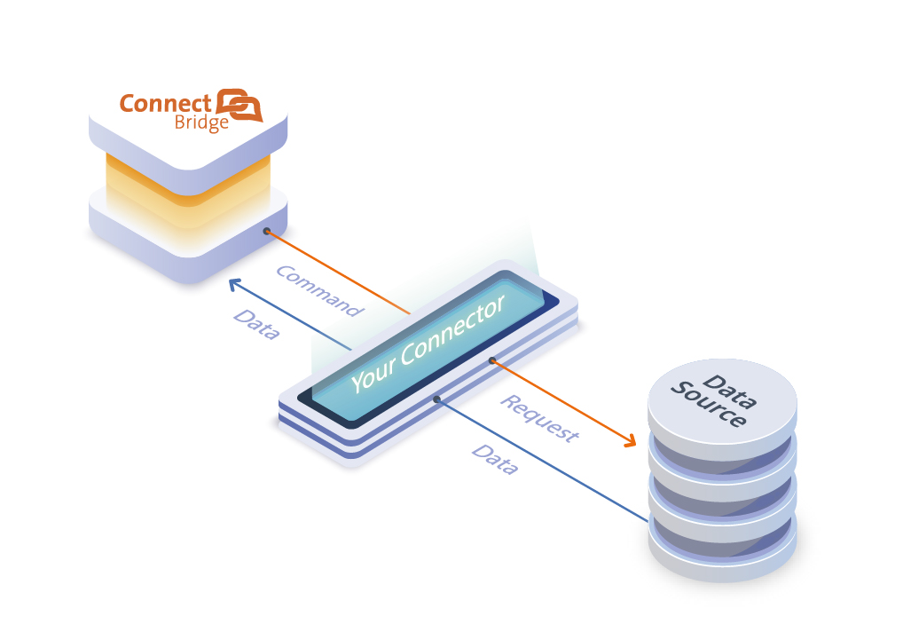

Define your connector logic
Finally, we get to the heart of the matter: supported SQL commands, functions, and operators. This is the hardest part of writing a custom connector, but with a little csharp knowledge, you can do it!
Once you have defined the supported SQL commands, functions, and operators; and how the data will be processed you can handle API calls and returned results. The basic workflow for this is depicted below.

Overview
Most custom connectors will do the following:
Transform an SQL query into an API operation. Call the API operation, and retrieve the data.
- If your data source provides a query language, you should start by defining a data structure containing the parts from which an API operation is constructed.
Parse the data into a set of rows and columns. You will need to know how the data from your data source will be returned.
- Web APIs frequently return data in .json and .xml formats.
- If your data source paginates its data, you may need to make multiple API calls to get all the data.
- If your data source returns data in a compatible format, you may be able to parse and store the data in one simple call.